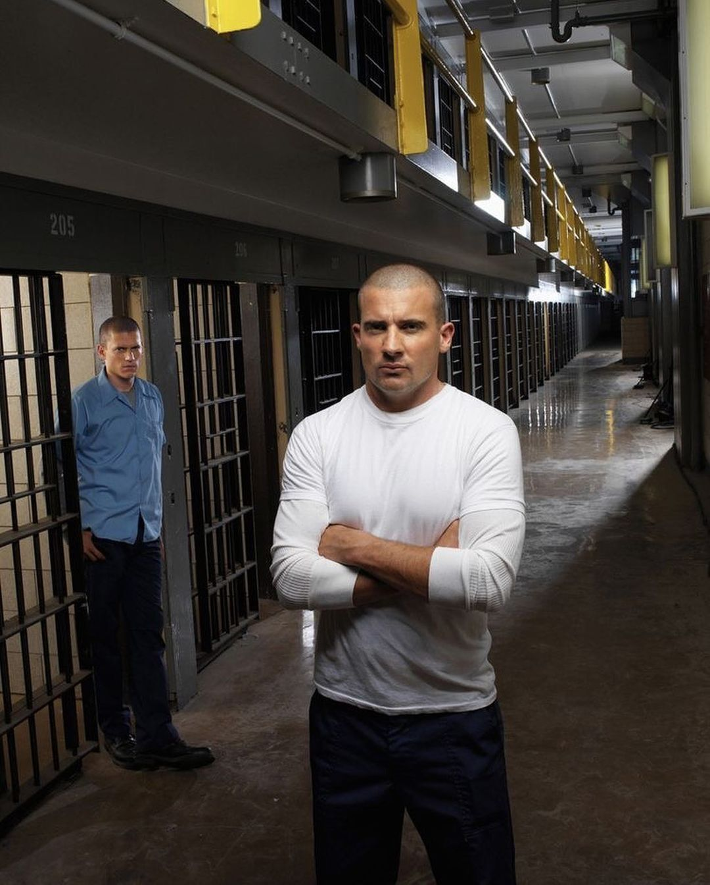
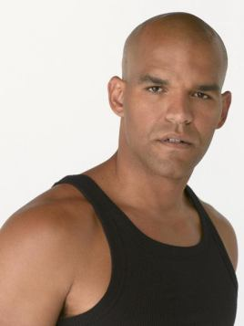
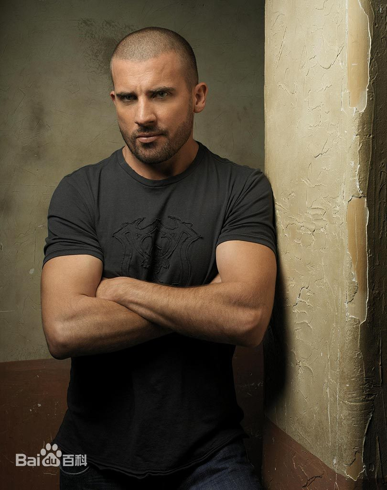
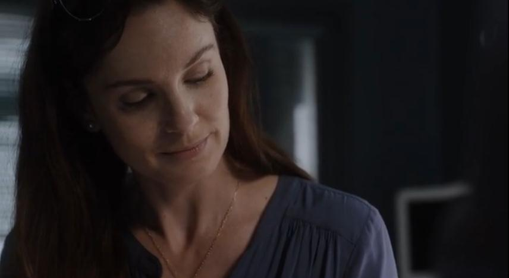
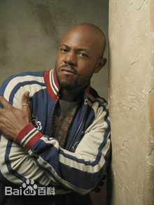

[yuè yù]
越 狱
美国88集（共五季）《越狱》（Prison Break）是由葛·艾坦尼斯等执导，保罗·舒尔灵编剧，温特沃思·米勒和多米尼克·珀塞尔等人主演的剧情悬疑电视剧。
该剧讲述的是一个关于拯救的故事，迈克尔为了救他被人陷害入狱的哥哥林肯，计划越狱并成功逃脱，在逃亡生涯中再次入狱，最后收集证据以求脱罪的一系列过程 。
主要演员
 角色介绍
迈克尔·斯科菲尔德演员 温特沃思·米勒 配音 苏强文 囚犯编号：94941，迈克尔·斯科菲尔德，成长轨迹堪称完美，从中学起便是模范学生，直到获得建筑工程硕士学位并进入一家著名的建筑公司，迈克尔在法庭上放弃了辩护换得在福克斯河监狱服刑的机会，他告诉错愕不已的哥哥林肯，他相信林肯没有犯谋杀罪，在死刑执行日之前，他要带着林肯逃出牢狱。 | ||
|  | 林肯·布鲁斯演员 多米尼克·珀塞尔 演员 多米尼克·珀塞尔 囚犯编号：79238，林肯被陷害杀害了美国副总统的弟弟，因此他被判处了死刑，目前关押在美国狐狸河的州立监狱中，他将在那接受电椅死刑。虽然他以“无罪”上诉，但被陪审团否决并判以电刑。在那天来临之前，林肯和他弟弟迈克·斯科菲尔德成功越狱，从此亡命天涯。 |
|
Sara Tancredi演员 维恩·卡里斯 配音 郑丽丽 Sara，很小的时候她就想当一名医生。在芝加哥郊区长大的过程中，她总是想进入医院工作。可是在她达成目标，获得医学学士的时候，她的职业因为她滥用毒品而毁了。 在麻醉药品滥用者互助协会团体治疗的无数次的帮助下，Sara终于能够戒掉毒瘾。此时的她已不想仅仅成为一名普通的医生，她决定走一条人道主义的道路。 |
||
|  |
John Abruzzi 演员 彼得·斯多马瑞 囚犯编号：81004， 前任芝加哥暴徒首领, 是有据可查的当前Fox River监狱中最声名狼藉的罪犯。Abruzzi 最终被定罪为谋杀两人和在数十年后为逃避惩罚意图谋杀伊利诺斯州地方律师。,使陪审团相信Abruzzi杀死了两个黑帮对手。 |
|
菲尔南多·苏克雷演员 阿马里·诺拉斯克 配音 陈卓智 囚犯编号：89775，菲尔南多·苏克雷出生在芝加哥，在街头长大。苏克雷遵纪守法直到他用一支没有子弹的枪抢了一个酒铺。苏克雷被送到Fox River监狱，成了那里的模范犯人。他唯一努力的就是争取每次的减刑机会，命运使斯科菲尔德和苏克雷成了狱友，也让苏克雷成了斯科菲尔德越狱计划的一分子。 |
||
|  |
Benjiamin演员 洛克蒙·邓巴 囚犯编号：89416，绰号C-note(钱包哥)，窝藏赃物被判八年。 |